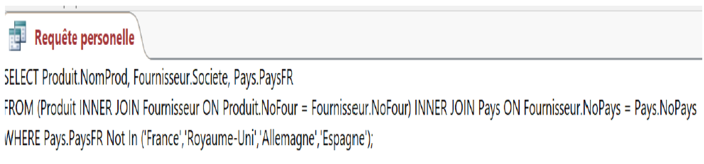
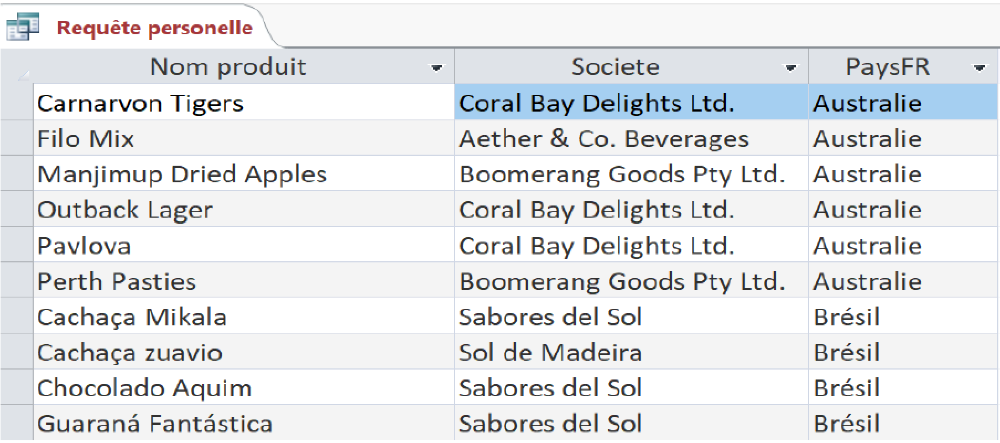
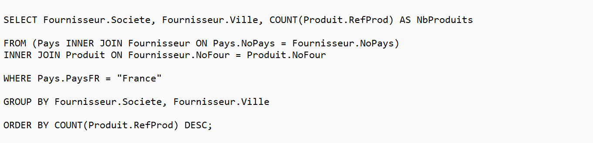
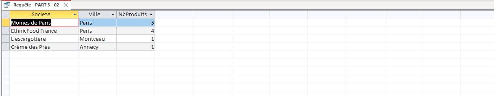
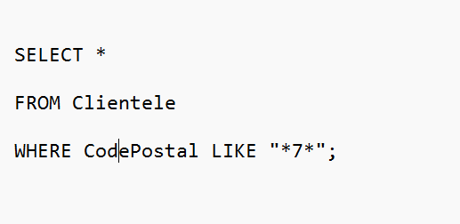

Proposition de Liam : Ventes de produits avec emballages recyclables
J'ai choisi de calculer le nombre de produits avec des emballages recyclables (verre ou carton), dans le but de quantifier le nombre de ventes, et éventuellement permettre à KDou de prendre des mesures concrètes quant à l'emballage des autres produits (augmenter le nombre d'emballages recyclables par exemple).
Cette requête compte d'abord le nombre de ventes au total, puis se restreint au nombre de ventes spécifiquement avec un emballage en carton ou en verre. Le résultat donne de manière détaillée à combien d'exemplaires est vendu chaque produit avec un emballage recyclable.
Requête SQL de Liam (emballages en carton ou verre)Résultat détaillé des ventes de produits à emballage recyclable
Proposition d'Eliav : Identification des produits importés hors UE
Pour ma proposition d'indicateur, j'ai choisi d'analyser l'empreinte carbone de KDou pour soutenir sa nouvelle démarche "éco-friendly". Mon objectif est de lister les produits importés hors de l'Union Européenne, avec leurs fournisseurs et pays d'origine. Cet indicateur est très utile dans notre contexte car il permet à la direction d'identifier rapidement les marchandises soumises à un transport longue distance très polluant. L'entreprise pourra ainsi décider d'optimiser son offre en cherchant des alternatives plus locales.
Pour construire cette requête, j'ai relié les tables Produit, Fournisseur et Pays à l'aide de jointures (INNER JOIN). Pour isoler les pays lointains de manière fiable, j'ai utilisé l'opérateur NOT IN avec une liste d'exclusion des principaux pays européens, ce qui évite les erreurs liées aux champs vrai/faux d'Access.

Requête SQL d'Eliav (produits importés hors UE)

Liste des produits provenant de pays hors Union Européenne
Proposition de Noé-Enzo : Valorisation des fournisseurs français et circuits courts
Je me suis demandé : quels sont les fournisseurs locaux (situés en France), classés par ville, et combien de produits différents fournissent-ils à KDou ?
L'idée est de pouvoir repérer facilement les partenaires de proximité pour aider KDou à privilégier les circuits courts dans sa politique d'achat.
Pour booster son image éco-responsable, KDou peut réduire les transports internationaux qui polluent beaucoup. Cet indicateur permet de voir où sont situés les fournisseurs français actuels et ce qu'ils apportent concrètement. Cela permettra de remplacer petit à petit les importations par des produits locaux.
J'ai utilisé deux jointures (INNER JOIN) pour lier les tables des pays, des fournisseurs et des produits. La clause WHERE me permet de filtrer pour ne garder que la France. Ensuite, en regroupant les données par société et par ville (GROUP BY), je peux utiliser la fonction COUNT() pour compter le nombre exact de produits par fournisseur. Enfin, le ORDER BY décroissant sert à afficher les plus gros partenaires français tout en haut de la liste.

Requête SQL de Noé-Enzo (fournisseurs français et nombre de références)

Classement des fournisseurs locaux situés en France
Proposition de Lucas : Proximité des clients et livraisons groupées
J'ai trouvé intéressant de faire cette requête car elle nous permet de nous rendre compte de la proximité de certains de nos clients. Cela nous permettrait donc de pouvoir grouper nos livraisons afin de réduire notre empreinte carbone, mais aussi pour les clients de réduire les frais de transport car partagés par plus de clients à la fois. De plus, cette requête est facilement aménageable pour chaque département ou zone de la France pour notre exemple.

Requête SQL de Lucas (proximité géographique des clients)